Skin.Chat snapshots
Offline copies of the public skin.chat, captured on a phone-sized screen. Tap a screen to open its live HTML and CSS. Nothing here talks to a server.
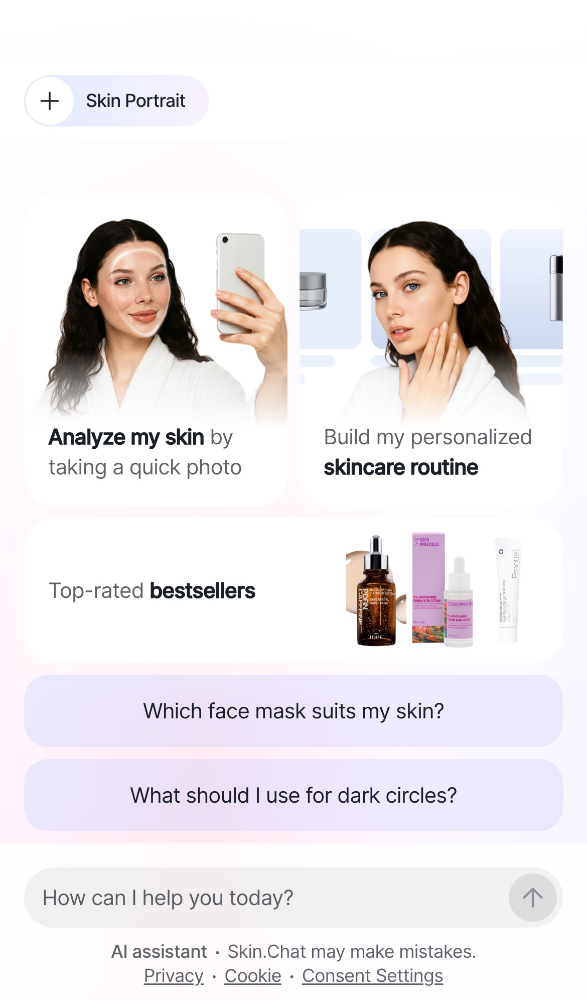
1. Home, empty chat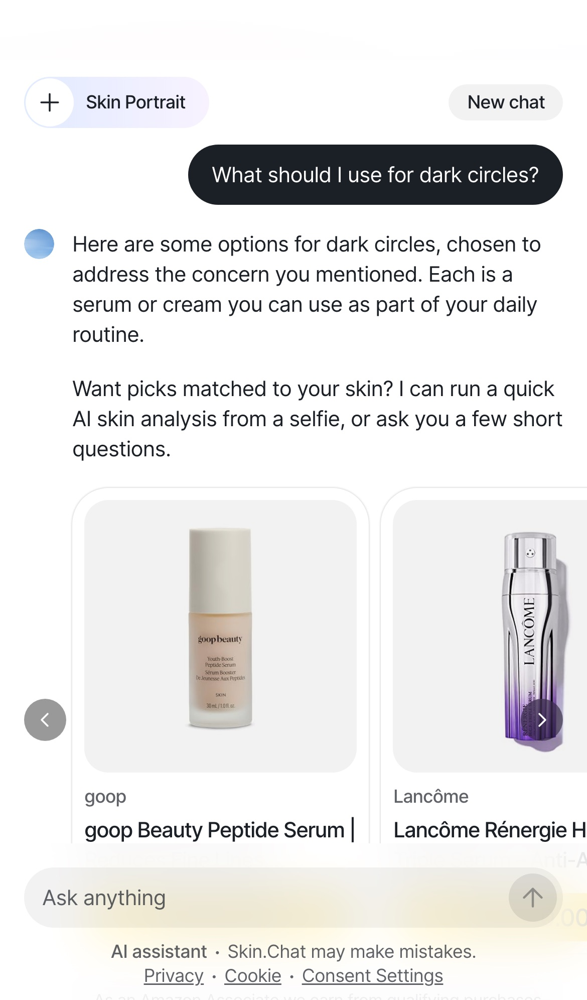
2. Answer with product carousel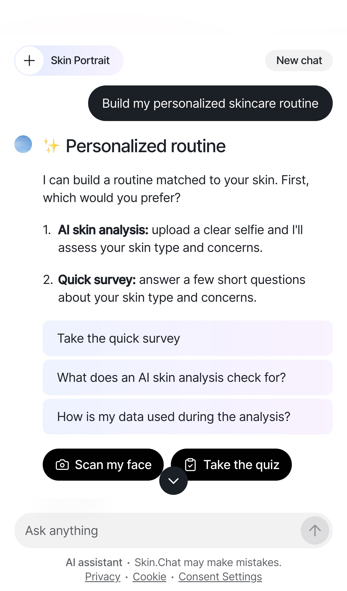
3. Routine: selfie or quiz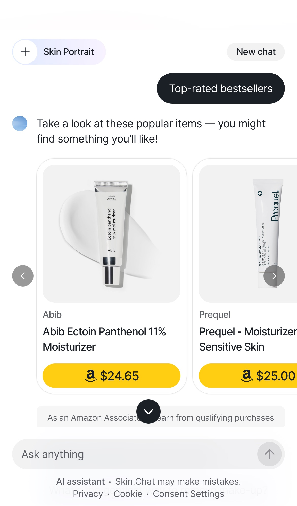
4. Bestsellers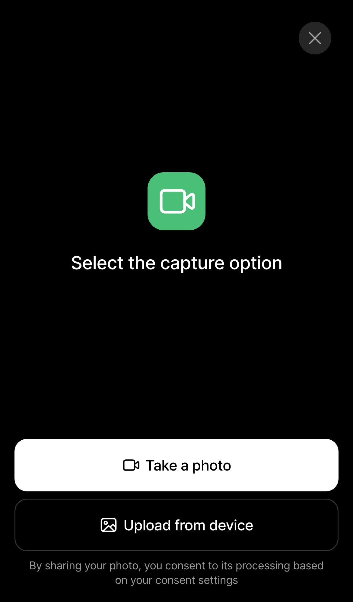
5. Photo capture options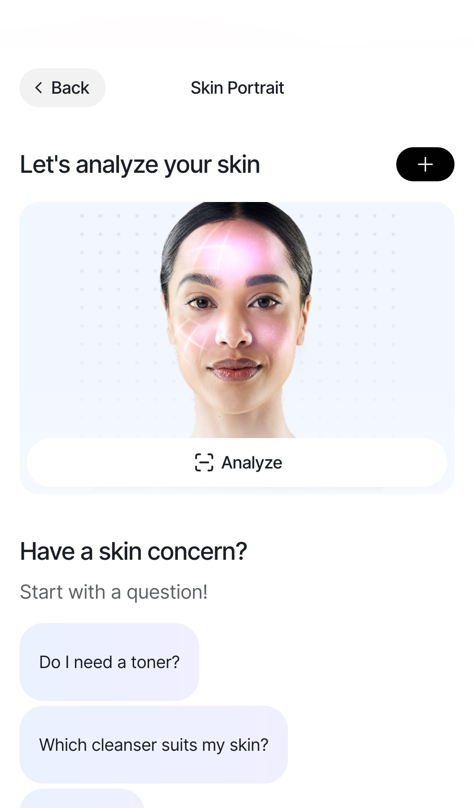
6. Skin Portrait, empty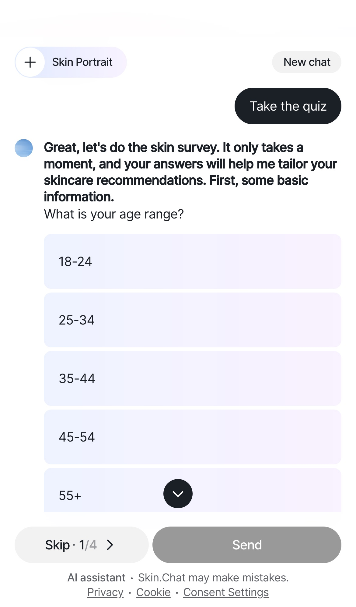
7. Skin quiz, single choice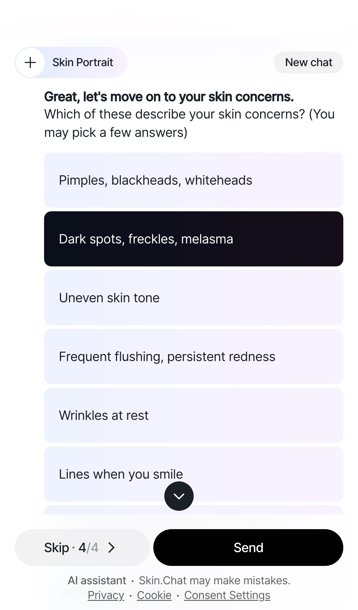
8. Skin quiz, multi choice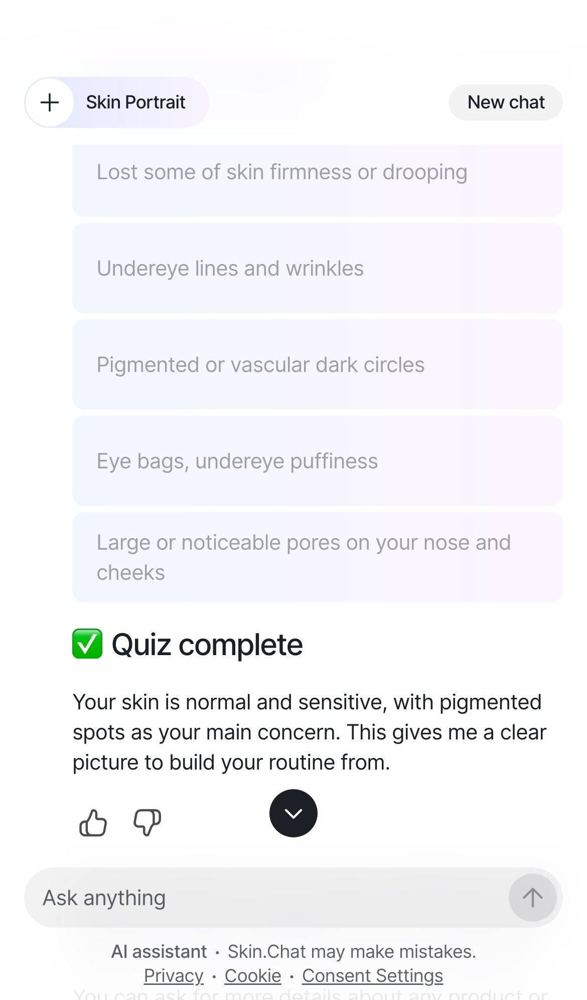
9. Routine result (scroll inside)
Skin analysis (AI-generated test face)
Run with a synthetic face, so no real person's photo was used. Scores are real output from skin.chat.
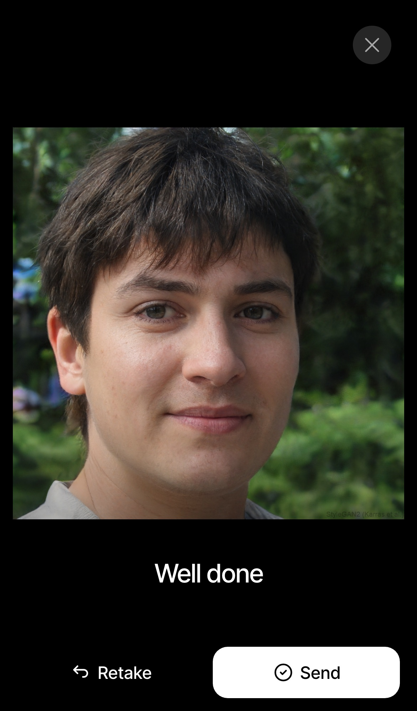
10. Photo check before sending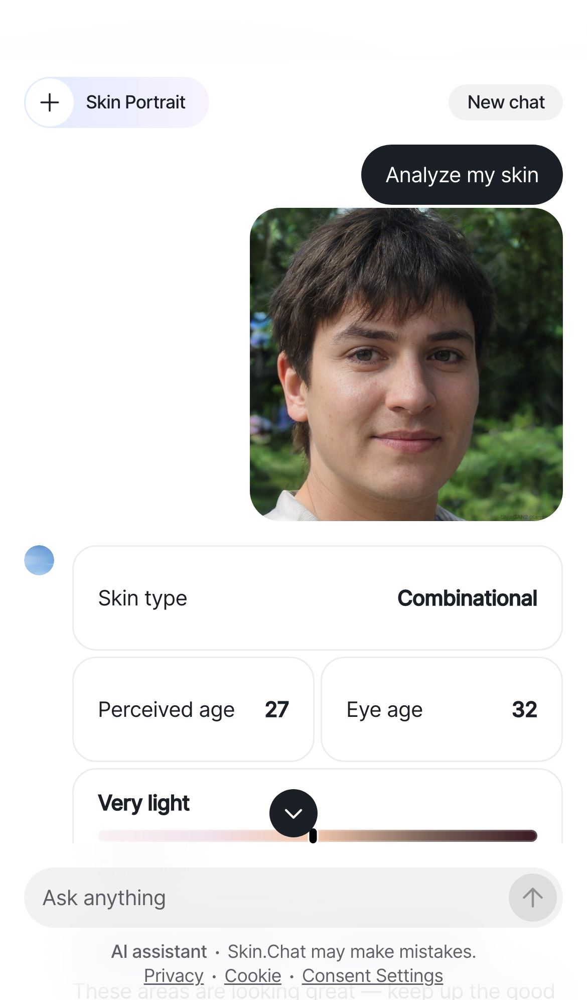
11. Results in chat: type, age, tone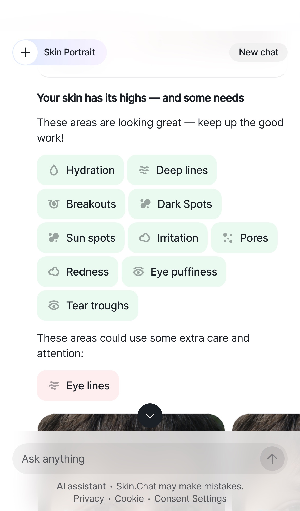
12. Strengths and focus areas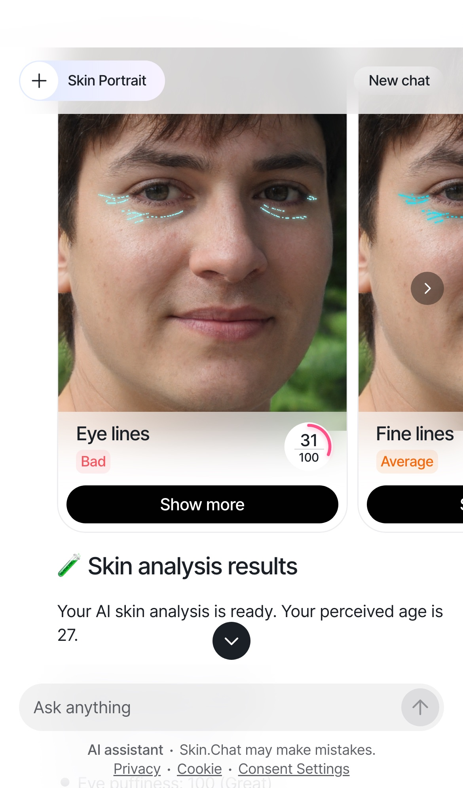
13. Score cards with face mask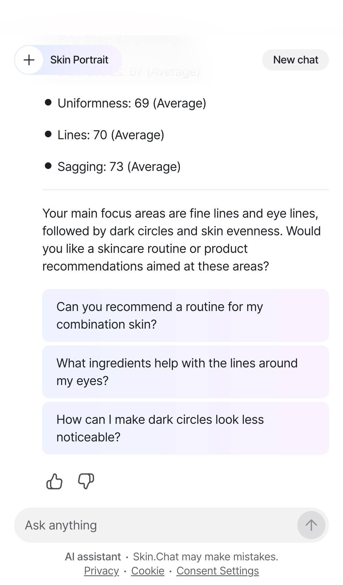
14. Summary and next questions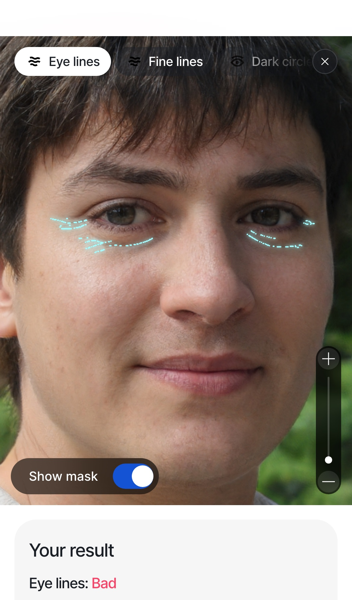
15. Score detail, full screen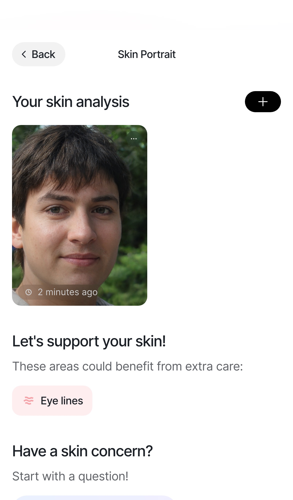
16. Skin Portrait after analysis


Second analysis, same face
A repeat analysis in the same browser, about 10 minutes later. Same photo, same scores. This is what "nothing changed" looks like today.